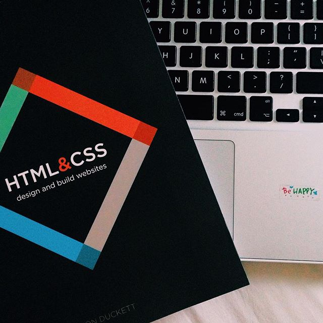
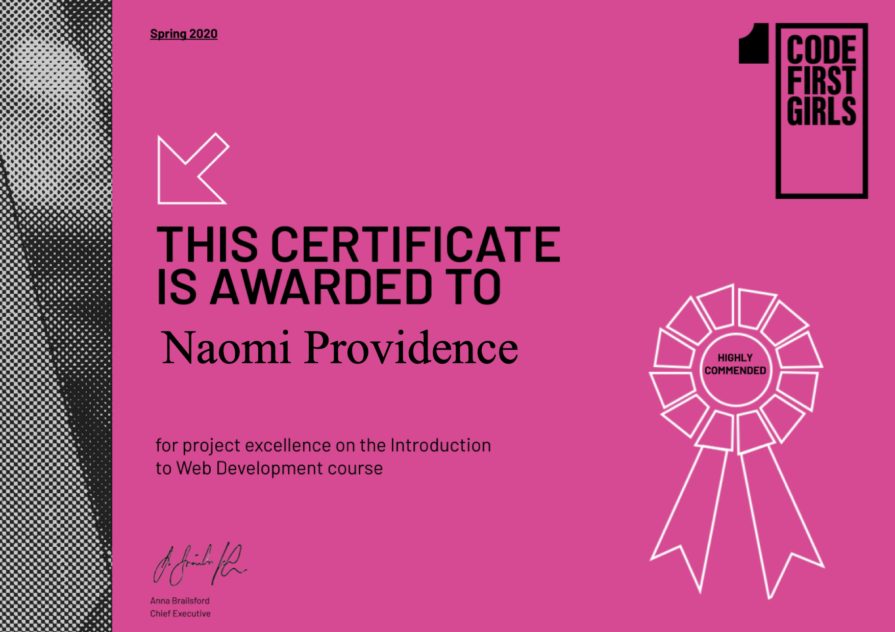

2011: GCSE IT Class
📍 Cambridge
My first exposure to HTML and CSS was during a poorly-taught GCSE class in a
poorly-lit classroom. The tools I had to my disposal were Windows Vista, Adobe Dreamweaver and
Internet Explorer coupled with a seriously slow internet connection.
Despite the drab teaching, I was fascinated that a few scores of code could create such
interesting and engaging content, and that anyone (even me!) could make such
content available to the whole world.
Unfortunately, my skills did not go much further than a basic table
structured websites, modifying Tumblr Themes and 'hacking' webpages
i.e. making humorous adjustments to the HTML of BBC News headlines.
2014: University
📍 Norwich
While studying for a law degree, I picked up HTML and CSS: Design and Build Websites by Jon Duckett and
continued to play around with basic code, this time on Wordpress, but also with very little success.

2016 - 2018: Paralegal Life
📍 London
I was fortunate to get a Paralegal role straight out of University and I was surprisingly required to apply my
knowledge of the fundamentals of HTML and CSS while acting for a client on copyright infringement claim. I
analysed the code of their reputable website and compare it with a copycat site that was being hosted in
Thailand, highlighting the similarities in the text and the visual effects their implentation had.
I never would have considered that my coding skills would have come in useful in a law office. That occurrence
reignited the spark of interest I had in web development and I proceeded to read more about the topic, playing
about with basic HTML and CSS but what I lacked was a goal or project.
Late 2018 - Summer 2019
📍 New York City
I spent long days in a window-less office so, when I wasn't at work, I was enjoying all that the city had to
offer.
When I wasn't out and about (i.e. the week before payday) I was indoors cooking up a storm or
coding using Python 3. I learned the basics at a half-day session at
the New York Public Library and then the rest from YouTube, Lynda
and trusty Google Search.
I surprised myself in successfully creating a short script to
make my days of monotonous document review more efficent.
While I enjoyed learning Python, I
greatly disliked its lacking of visuals results and that it had few
opportunities to show off creativity, other than perhaps, Turtle.

Spring 2020
📍 Cambridge, UK
Upon my return, I enrolled on my Masters but I was determined to enrol on a coding course
simultaneously.
Fortunately, Code First Girls were launching an Introduction to Web Development evening course a short bus
ride
from my university and I was accepted. Over eight weeks, I refreshed my knowledge of the basics of HTML and
CSS
and supplemented it with some basic JavaScript.
As part of the course, I worked with two others to develop Travel For Good, a bespoke holiday
booking platform for conscious travellers. I personally developed the Booking Form landing page and as team,
the
website won us an
award
for excellence.
Summer 2020: Founders and Coders?
📍 Space4 (or via Zoom)?
I am confident that coding, specifically web development, combines my skills of problem-solving and attention
to
detail with my desire to be creative. Over the years, I have become increasingly disillusioned by the law and
therefore seek an escape
before it is too late.
Whilst my first exposure to web development was almost 10 years ago, when I
was 16 years old, it still managed to find its way back onto my radar.
Transitioning from the law to participating in Founders and Coders would be certainly be a big and challenging
step, which I think would be in the right directin. I will approach the course with drive, determination and
passion in order to make web developement a career and not just a hobby.
I would be extremely grateful for this opportunity to develop my skills, meet other like-minded people and
become part of the mentor team for the next cohort.
Thank you for considering my application.